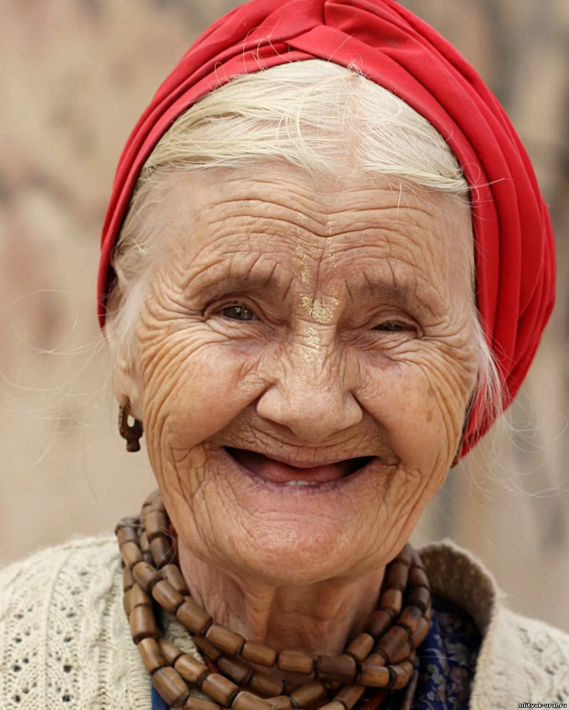

~ 12.11.2025- 20.12.2025
Покупка фруктов

Иванова
Нина Алексеевна
Частота выполнения
Расписание
1) Бананы 0.5 кг
Важно выбирать свежие бананы!
Еженедельно
10:00
2) Яблоки 3 кг
Еженедельно
10:00
3) Виноград 2 кг
Ежемесячно
10:00
4) Персики 1 кг
Еженедельно
10:00
Статус: неоплачен